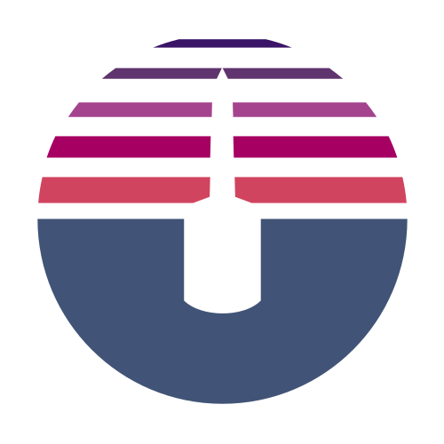

About Hazardawareness
Small business and start-ups need great design to beat their competition. Hazardawareness is the lighweight and efficient agency that specialises in packaging these essential services to quickly get your new brand up and running.
We focus on creating and expanding local business and startup's online presence. Hazardawareness has created presense for a great clients where with our knowledgeand honesty and their entusiasm and expertise, we can really help them grow. We would love to speak to you if you're looking for a quality, cost-effective web presense, brand and other design based needs.
The Hazardawareness brand is built around the great outdoor, water based lifestyle that Perth is perfect for, mixed with a unique goal to create sustainable businesses that are a net gain for the local economy, envornment and community. The new wave of Perth's small and new businesses, with their founders awareness, have such an opportunity to make a real change and that's what really makes them stand out from the rest.